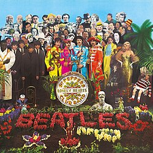
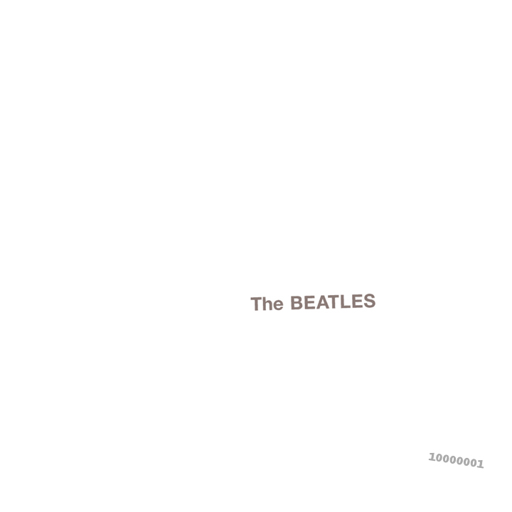

1966
Revolver
褪去早期流行搖滾的青澀，大膽運用錄音技術、印度音樂與迷幻元素，將搖滾樂帶入嶄新的實驗領域，展現披頭四最具創造力與探索精神的一面。
1960年在英國利物浦成軍，由約翰·藍儂、保羅·麥卡尼、喬治·哈里森與林哥·史達組成。披頭四不僅是流行音樂史上銷量最高、影響力最深遠的樂團，更徹底改變了唱片製作、流行文化的樣貌與青年世代的精神風貌
從早期的「Beatlemania」狂熱旋風，到後期深入社會議題與錄音室聲音實驗的曠世巨作《Sgt. Pepper's Lonely Hearts Club Band》，他們在短短十年內創造了無數不可超越的音樂里程碑。
主唱 / 節奏吉他 / 詞曲創作
披頭四的「精神」，樂團的創始核心，以犀利直率的詩意歌詞、不羈的反叛精神與前衛實驗風格聞名，為後世搖滾樂注入了強烈的社會意識與人文關懷
主唱 / 貝斯 / 詞曲創作
披頭四的「大腦」擁有無與倫比的旋律直覺與全方位樂器才華，創作了無數跨越時代的金曲，將流行樂的精緻度與音樂性推向歷史新高度。
主唱 / 主音吉他 / 詞曲創作
披頭四的「靈魂」，將東方印度音樂與哲學思維引入西方搖滾，其吉他編曲細膩且充滿內省的靈性美感。
鼓手 / 打擊樂 / 偶任主唱
以獨特精準的左撇子打法與隨性搖擺的律動感，穩固了樂團龐大編曲底盤，其幽默風趣的個人特質也是團隊不可或缺的潤滑劑。
定義了搖滾樂黃金年代、至今仍影響無數音樂人的四大代表作。
褪去早期流行搖滾的青澀，大膽運用錄音技術、印度音樂與迷幻元素，將搖滾樂帶入嶄新的實驗領域，展現披頭四最具創造力與探索精神的一面。

史上第一張概念專輯，以虛構樂團為概念，融合迷幻搖滾、管弦樂與實驗音效，打破傳統流行專輯的框架，將音樂塑造成一場充滿想像力的藝術演出。

褪去迷幻時期的華麗包裝，以極簡的封面呈現豐富而多元的音樂內容。從搖滾、民謠、藍調到實驗音樂，四位成員各自展現鮮明的創作個性，形成一張風格迥異卻充滿生命力的作品。
以精緻的編曲、豐富的音樂層次與標誌性的組曲收尾，將四位成員的創作才華凝聚成成熟而優雅的作品，也成為披頭四最後錄製的錄音室專輯。